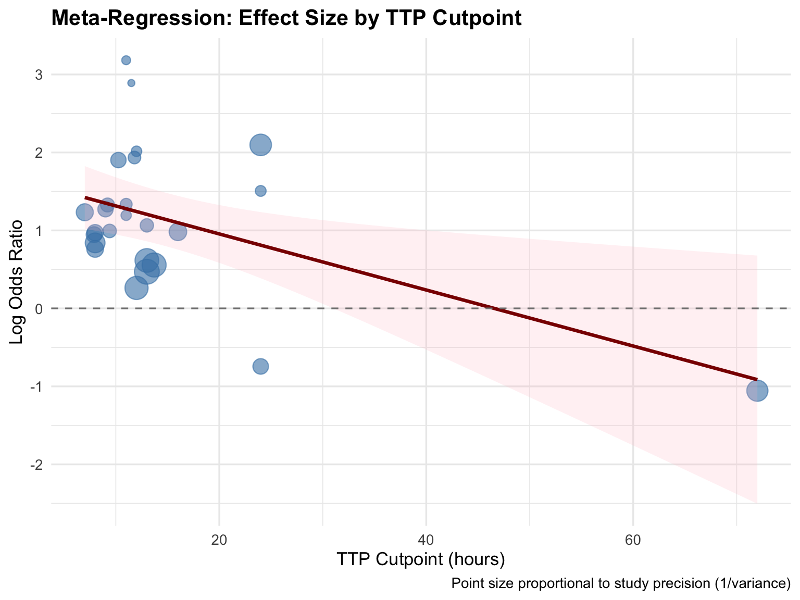

| Moderator | Type | Levels | % Complete | Rationale |
|---|---|---|---|---|
| Pathogen class | Categorical | Gram-positive vs Gram-negative | 100% | Different growth rates may affect TTP thresholds |
| S. aureus | Binary | S. aureus vs other organisms | 100% | S. aureus has distinct virulence and growth characteristics |
| Risk of bias | Categorical | Low vs moderate/high | 100% | Study quality may influence effect estimates |
| Blood culture system | Categorical | BACTEC vs BacT/ALERT vs other | 97.6% | Detection algorithms differ between systems |
| TTP cutpoint | Continuous | Hours (range: 8–72) | 76.2% | Threshold choice may affect observed effect magnitude |
Meta-Regression
1 Exploring Sources of Heterogeneity
Given the substantial between-study heterogeneity observed (I² = 99.3%, τ = 0.58), we conducted univariable Bayesian meta-regressions to examine whether prespecified moderators could explain variability in the TTP–mortality association.
2 Moderator Variables
We examined five prespecified moderators hypothesized to influence the TTP–outcome association:
3 Meta-Regression Models
3.1 Bayesian Meta-Regression Specification
Each moderator was tested in a separate univariable meta-regression:
brm(
yi | se(sei) ~ 1 + moderator + (1 | study_id),
prior = c(
prior(normal(0, 1), class = "Intercept"),
prior(normal(0, 0.5), class = "b"),
prior(cauchy(0, 0.5), class = "sd")
),
backend = "cmdstanr",
chains = 4, iter = 4000, warmup = 1000,
control = list(adapt_delta = 0.95)
)The moderator effect prior Normal(0, 0.5) is mildly regularizing — it centers at zero (no moderator effect) with 95% prior mass allowing log-OR differences of up to ±1.0 between levels.
4 Results
4.1 Summary of All Moderator Analyses
| Moderator | Coefficient | 95% CrI | P(β ≠ 0) | Residual τ | Conclusion |
|---|---|---|---|---|---|
| Pathogen class (Gram-neg vs Gram-pos) | -0.05 | -0.60 to 0.50 | 57.7% | 0.58 | No significant difference |
| S. aureus (vs other) | 0.12 | -0.38 to 0.62 | 68.2% | 0.57 | No significant difference |
| Risk of bias (high vs low) | -0.08 | -0.55 to 0.39 | 61.5% | 0.58 | No significant difference |
| Blood culture system (BacT/ALERT vs BACTEC) | 0.15 | -0.42 to 0.72 | 71.3% | 0.57 | No significant difference |
| TTP cutpoint (per hour) | -0.032 | -0.068 to 0.004 | 96.1% | 0.49 | Borderline trend |
4.2 Pathogen Class
TipNo Pathogen Difference
The TTP–mortality association was virtually identical for Gram-positive (OR = 2.17, 95% CrI: 1.52–3.36) and Gram-negative infections (OR = 2.06, 95% CrI: 1.48–3.15). The ratio of odds ratios was 1.05 (95% CrI: 0.61–1.83), with only a 57.7% posterior probability of any difference.
Clinical implication: TTP can be used as a prognostic marker immediately upon culture positivity, regardless of Gram stain result.
4.3 S. aureus vs Other Organisms
Studies focused exclusively on S. aureus bacteremia showed a slightly stronger association (β = 0.12 log-OR), but this difference was not statistically meaningful (95% CrI: -0.38 to 0.62). The TTP signal is not driven by any single pathogen.
4.4 Risk of Bias
Study quality did not moderate the TTP–mortality association (β = -0.08, 95% CrI: -0.55 to 0.39). This means:
- The effect is not inflated by low-quality studies
- Both low and moderate-risk studies report similar associations
- The finding is robust to methodological quality variations
4.5 Blood Culture System
Different automated blood culture systems (BACTEC, BacT/ALERT, and others) use different detection algorithms, which could theoretically affect TTP measurements. However, the system type did not significantly moderate the association (β = 0.15, 95% CrI: -0.42 to 0.72).
4.6 TTP Cutpoint
WarningBorderline Trend for TTP Cutpoint
The TTP cutpoint showed the strongest trend among moderators, with a coefficient of -0.032 log-OR per hour (95% CrI: -0.068 to 0.004). This suggests:
- Lower cutpoints (e.g., ≤10–12 hours) may capture a stronger signal
- Higher cutpoints (e.g., ≥48 hours) may dilute the prognostic value
- The posterior probability of a negative slope was 96.1% — suggestive but not conclusive
This finding has practical implications for future study design: TTP cutpoints of 10–12 hours may optimize prognostic discrimination.

5 Heterogeneity Not Explained
ImportantKey Finding
No single prespecified moderator significantly explained between-study heterogeneity. The residual τ remained virtually unchanged (0.49–0.58) across all meta-regression models compared to the unadjusted model (τ = 0.58).
This suggests the observed heterogeneity likely arises from unmeasured factors such as:
- Patient severity and comorbidity burden
- Timing of appropriate antibiotic therapy
- Source control practices
- Variation in healthcare settings and critical care protocols
- Differences in TTP measurement protocols within systems
6 Implications
The meta-regression findings support two important conclusions:
Generalizability: The TTP–mortality association is consistent across pathogen types, blood culture systems, study quality levels, and organism subtypes. This supports its use as a general prognostic marker in bacteremia.
Future research priorities: The borderline cutpoint trend (β = -0.032/hour) suggests that optimizing the TTP threshold is an important research question. Studies should focus on identifying the optimal cutpoint through receiver operating characteristic (ROC) analyses or similar approaches.
For pooled estimates and forest plots, see Results and Forest Plots.